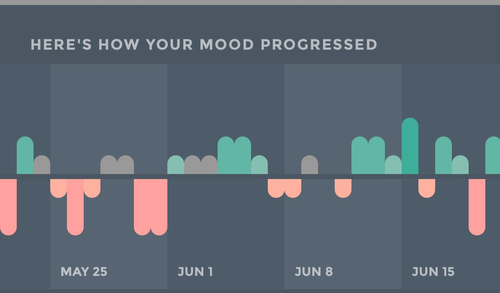

這兩天好像能理解雙相的感受了，躁的時候一開始很爽，後來就開始因為腦子很累，但是又強行跑性能，確實很難受，極端躁狂之後就是極端抑鬱，果然抑鬱症的終點是雙相啊，問了兩個AI講我的情況，他們說有可能是雙相II型。
我準備開始戒藥了，當然肯定不可能馬上停掉，先減量把pr減到2t，思諾思一天最多1t，希望不會後面又加回去。
我感覺我在說【我準備開始戒藥】的時候有鳥姐那味了，反復戒藥反復失敗，不過我不會吞亞硝酸鈉的，要死也要換個死的快的。
我準備開始戒藥了，當然肯定不可能馬上停掉，先減量把pr減到2t，思諾思一天最多1t，希望不會後面又加回去。
我感覺我在說【我準備開始戒藥】的時候有鳥姐那味了，反復戒藥反復失敗，不過我不會吞亞硝酸鈉的，要死也要換個死的快的。
